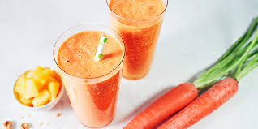

Breakfast Shake

Description
This shake is for after your morning workout. It contains vitamins and important fiber, for a good recovery.
It can also be taken as a meal in between.
Ingredients
- 250g lean curd
- 20g flaxseed or oil
- 40-50g oatmeal
- 100g fruit
- 250ml carrot juice
Steps
- pour carrot juice into the mixer
- add lean curd
- add the flaxseed
- throw in the oatmeal
- mix at a low level
- add some fruit
- mix until liquid